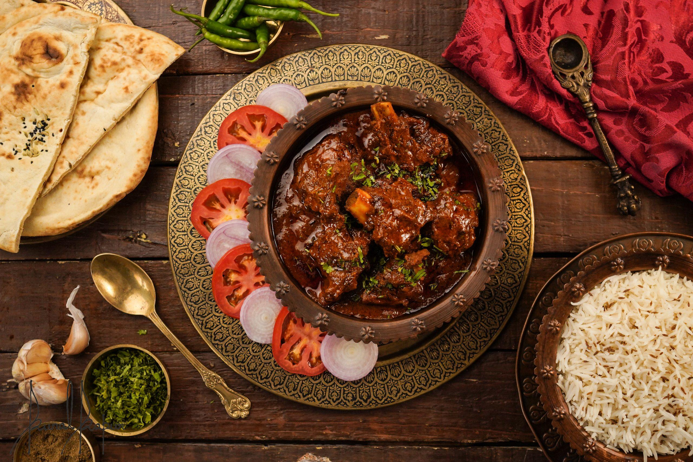

MUTTON Rogan josh

Rogan josh consists of pieces of lamb or mutton braised with a gravy flavoured with garlic, ginger and aromatic spices (clove, bay leaves, cardamom, and cinnamon), and in some versions incorporating onions or yoghurt.After initial braising, the dish may be finished using the dampokhtak slow-cooking technique.Its characteristic deep red colour traditionally comes from dried flowers or root of Alkanna tinctoria (ratan jot) and from liberal amounts of dried, deseeded Kashmiri red chilli (lal mirch).
Ingredients
- mutton
- yogurt
- onions
- ginger-garlic paste
- Kashmiri red chilli powder
- fennel powder
- cumin
- cardamom
- cloves
- cinnamon
- ghee
- mustard oil
- asafoetida
- bay leaves
Steps:
- Heat oil in a pressure cooker, add cloves, green cardamoms, fennel seeds, sliced onions, and salt, and sauté till onions are browned.
- Add ginger-garlic paste, fennel powder, green cardamom powder, and Kashmiri red chili powder, and sauté for 1–2 minutes.
- Add mutton pieces, mix well, and sauté until lightly browned.
- Add whisked yogurt, mix thoroughly, and cook till oil separates from the masala.
- Add 2 cups of water, seal the pressure cooker, and cook for 3–4 whistles (about 25 minutes).
- Open the cooker, strain the contents into a pan, keep the mutton aside, blend the strained solids with some stock into a smooth paste, and return it to the pan.
- Boil the gravy, mix roasted chana powder with water to make a slurry, and stir it into the gravy.
- Add remaining green cardamom powder, coriander leaves, ginger strips, cinnamon powder, and fennel powder, cover, and simmer for 5 minutes.
- Transfer to a serving bowl and garnish with ginger strips and coriander sprig.
Homepage